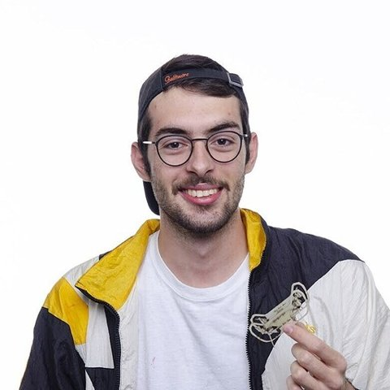

Robotics engineer and PhD student at MIT CSAIL. I've worked on robots from insect-scale jumpers to humanoids, and on the ethics of putting them in front of people.
About
I've lived in Costa Rica, Senegal, Benin, Italy, Germany, Switzerland, the UK and the US. Moving that much made me an empiricist: I don't really believe something until I've tried it myself.
I studied microengineering at EPFL in Lausanne, with an exchange year at TUM in Munich, then wrote my master's thesis in robotics at the Harvard Microrobotics Lab. I stayed on as a research fellow and led a project to build an insect-sized robot that can both walk and jump, inspired by springtails. It became my first-author paper in Science Robotics. After that I worked on the Headphone (1) at Nothing in London, and in 2024 I started my PhD at MIT.
At MIT CSAIL I work with humanoid robots: I brought up a Unitree G1 and deployed NVIDIA's GR00T model on it. As an MIT SERC Scholar I also looked at the ethics of putting models like this into real spaces. I teach too, as a TA for 6.UAR, where I advise more than 30 students a term through their first research projects.
Outside the lab I'm usually on the water wingfoiling or surfing, playing ping-pong, deep in a game of Dune: Imperium with friends, or reading philosophy and psychology.
Work
MIT CSAIL. Brought up a Unitree G1 humanoid with dexterous hands and deployed NVIDIA's GR00T vision-language-action model on it: teleoperation, cameras, networking and a test rig for repeatable trials.
MIT SERC. Evaluated a deployed GR00T model against an AI-ethics framework through a stakeholder workshop and a deployment audit. Presented as a poster at the MIT SERC Symposium.
Harvard Microrobotics Lab. Led the project from concept through design, fabrication and high-speed testing to publication.
Harvard Microrobotics Lab. Design considerations for building millimeter-scale mechanisms quickly.
Nothing, London. Developed new test methods and turned force measurements into design and manufacturing recommendations.
Scalable HCI residency. Building, factory visits and a close look at how products are made at scale.
Project 1985, Harvard. Designed and prototyped hydraulically actuated tools for a surgical-robotics start-up launched from the lab.
EPFL & Flybotix. Insect-inspired self-righting for fixed-wing drones, and a co-axial propeller test bench that cut bench costs by 75%.
MIT Center for Bits and Atoms. A weekly build log from Neil Gershenfeld's digital fabrication class.
Talks & teaching
Teaching
Writing
Everyone secretly wants to jump in the water. On surfing, ping-pong, and being the person who gives everyone else the excuse.
What I've taken from Harry Frankfurt's The Reasons of Love, Sartre's Existentialism Is a Humanism, and my detour through Jung, Freud and Adler.
My view on where this is all going, from someone who has deployed a robot foundation model and audited it.
Contact
I'm open to conversations about roles in robot evaluation, safety, deployment and technical diligence, especially in San Diego. I'm also always happy to talk philosophy, board games or where the wind is good this weekend.